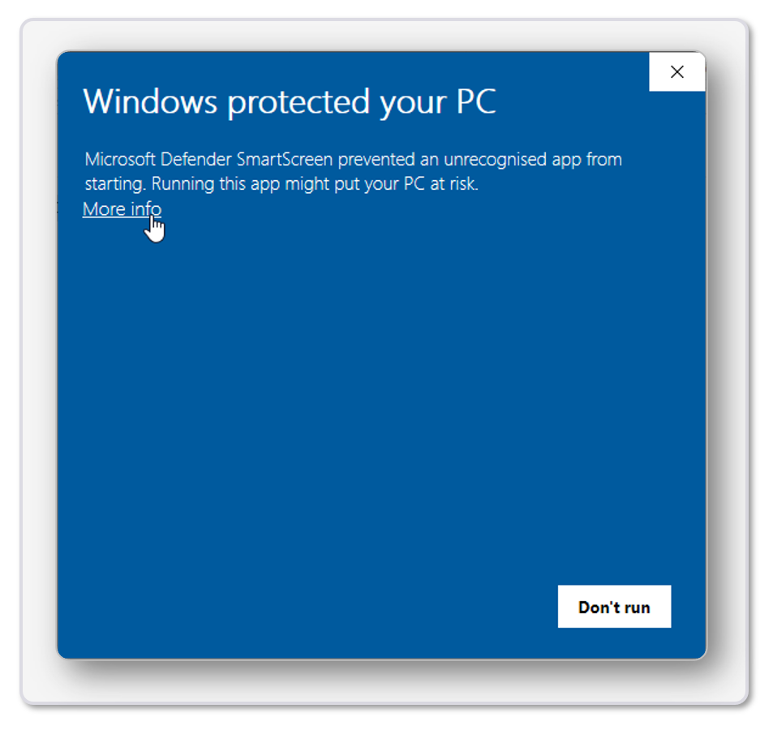
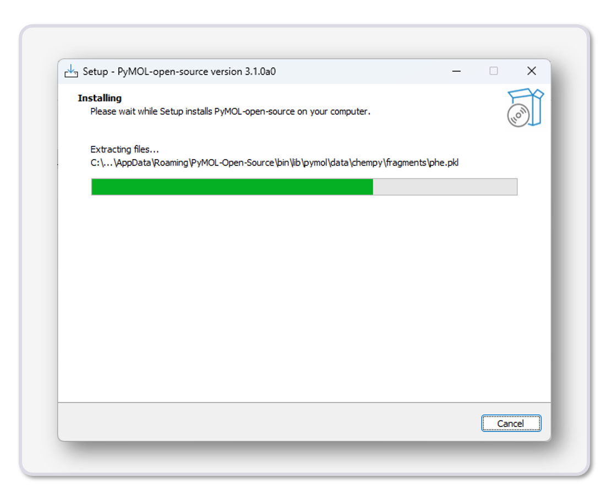
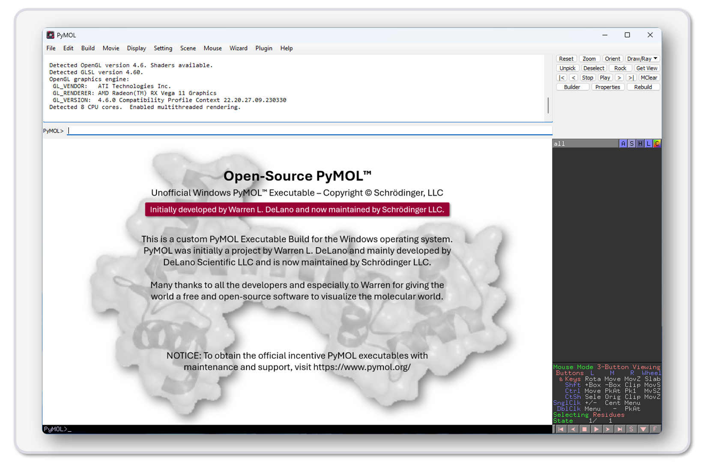
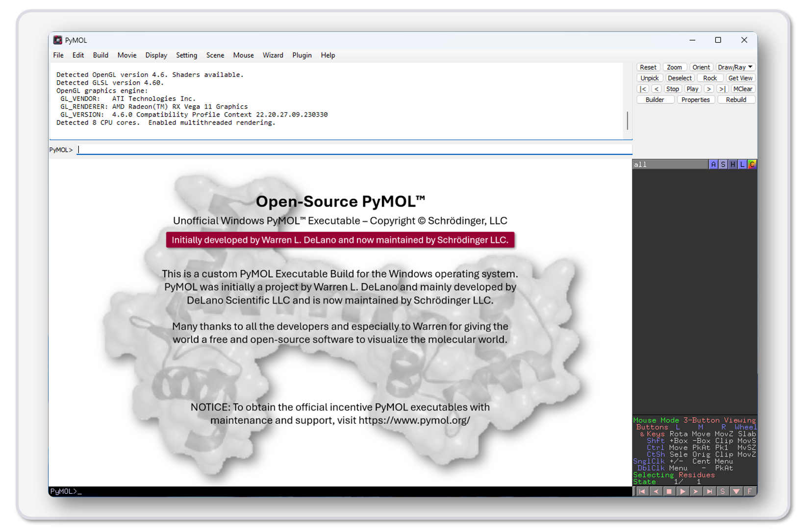

Installation for Windows Operating System
Install location: C:\Users\%USERNAME%\AppData\Roaming\PyMOL-Open-Source\bin
Step-by-Step Installation Guide
For a convenient and user-friendly installation follow these steps (installation should take around 5 minutes):
-
Download the PyMOL_Open_source_v3.1.0a0_WINx64_setup.exe. Click here to automatically start the download. The download will take around a minute to download depending on your internet connection.
-
After the download finished open a Windows explorer window and navigate to Downloads.
-
Double-click on the file PyMOL_Open_source_v3.1.0a0_WINx64_setup.exe to start the setup.

-
Depending on the security settings a Windows protected your PC dialog will open. Click on More info to proceed.
 -
Click on Run anyway to start the setup.

-
Agree to the license agreement and click on Next.
-
Wait for the installation to finish (This step takes around 1 minute to complete).
 -
Click on Finish.

-
Start PyMOL by double-clicking on the desktop icon.
 
